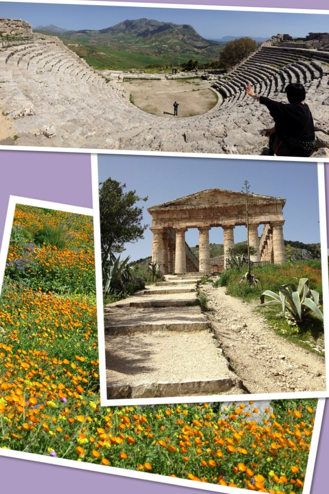

The ruins of Segesta: the Greek theater and the temple On the eighth day of our trip Paolo left very early in the morning. After we took him to the airport and said our goodbyes, his brother and I got back to our B&B where we collected our luggage along with the rest of the group and headed off to visit the very last attraction of our trip: the Greek ruins of Segesta. Segesta lays on the top of a mountain from where you can enjoy the spectacular view. The main ruins are the Greek theater and the Doric temple, which, they say, is unfinished because its columns have never been fluted and the top has never been roofed over. For many this is the best preserved Greek temple in the world. It truly is a fascinating site, full of history and charm. Since our flight was departing from Trapani at 3pm, it was time for us to drive to the airport and return our minivan. We were able to do everything on time and despite a super strong wind our plane took off as planned (I honestly thought that they were going to cancel the flight...). And with that, our Sicilian adventure was officially over. We left behind an amazing island and took with us some precious memories. All in all the trip was bellissimo: art, history, nature, food, hospitable people... all in one fantastic place.